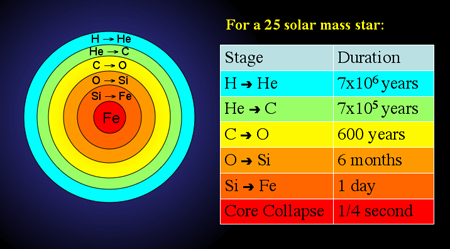

All supernovae are produced via one of two different explosion mechanisms. The thermonuclear explosion of a white dwarf which has been accreting matter from a companion is known as a Type Ia supernova, while the core-collapse of massive stars produce Type II, Type Ib and Type Ic supernovae.
All stars, regardless of mass, progress through the first stages of their lives in a similar way, by converting hydrogen into helium. As the hydrogen is used up, fusion reactions slow down resulting in the release of less energy, and gravity causes the core to contract. This raises the temperature of the core again, generally to the point where helium fusion can begin. Once helium has been used up, the core contracts again, and in low-mass stars this is where the fusion processes end – with the creation of an electron degenerate carbon core.
For massive (>10 solar masses) stars, however, this is not the end. The contraction of the helium core raises the temperature sufficiently so that carbon burning can begin. After the carbon burning stage comes the neon burning, oxygen burning and silicon burning stages, each lasting a shorter period of time than the previous one. The end result of the silicon burning stage is the production of iron, and it is this process which spells the end for the star.

Up until this stage, the enormous mass of the star has been supported against gravity by the energy released in fusing lighter elements into heavier ones. Iron, however, is the most stable element and must actually absorb energy in order to fuse into heavier elements. The formation of iron in the core therefore effectively concludes fusion processes and, with no energy to support it against gravity, the star begins to collapse in on itself. The star has less than 1 second of life remaining.
During this final second, the collapse causes temperatures in the core to skyrocket, which releases very high-energy gamma rays. These photons undo hundreds of thousands of years of nuclear fusion by breaking the iron nuclei up into helium nuclei in a process called photodisintegration. At this stage the core has already contracted beyond the point of electron degeneracy, and as it continues contracting, protons and electrons are forced to combine to form neutrons. This process releases vast quantities of neutrinos carrying substantial amounts of energy, again causing the core to cool and contract even further.
The contraction is finally halted once the density of the core exceeds the density at which neutrons and protons are packed together inside atomic nuclei. It is extremely difficult to compress matter beyond this point of nuclear density as the strong nuclear force becomes repulsive. Therefore, as the innermost parts of the collapsing core overshoot this mark, they slow in their contraction and ultimately rebound. This creates an outgoing shock wave which reverses the infalling motion of the material in the star and accelerates it outwards.
Aiding in the propagation of this shock wave through the star are the neutrinos which are being created in massive quantities under the extreme conditions in the core. Under normal circumstances neutrinos interact very weakly with matter, but under the extreme densities of the collapsing core, a small fraction of them can become trapped behind the expanding shock wave. The energy of these trapped neutrinos increases the temperature and pressure behind the shock wave, which in turn gives it strength as it moves out through the star.
The passage of this shock wave compresses the material in the star to such a degree that a whole new wave of nucleosynthesis occurs. These reactions produce many more elements including all the elements heavier than iron, a feat the star was unable to achieve during its lifetime. The creation of such elements requires an enormous input of energy and core-collapse supernovae are one of the very few places in the Universe where such energy is available. Eventually, after a few hours, the shock wave reaches the surface of the star and and expels stellar material and newly created elements into the interstellar medium. What is left behind is either a neutron star or a black hole depending on the final mass of the core.